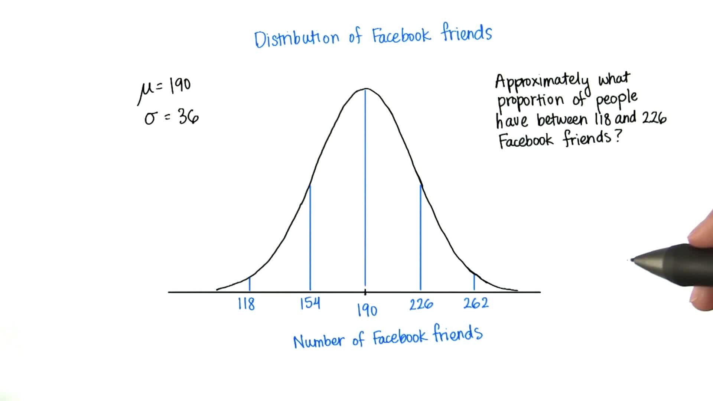

第 6 课: 正态分布
Back to Home
01. 概率密度函数简介
02. 概率
03. 认识概率密度函数
04. 概率大于
05. 概率小于
06. 2个标准偏差以下或以上
07. Facebook 好友比例
08. 大于 262
09. 介于 118 和 226 之间
10. 小于 240
11. Z-表格
12. 使用Z-表格
13. Karma
14. 每篇帖子的平均 Karma 分数
15. 每篇帖子的 Karma 分数的标准偏差
16. 整数标准偏差
17. 小于 5
18. 大于 20
19. 介于 10 和 16 之间
20. 前 5%
21. 真棒！
Back to Home
09. 介于 118 和 226 之间
介于 118 和 226 之间
Question:
Start Quiz:

Solution:
INSTRUCTOR NOTE:
我们再来做个练习，Facebook 好友数在 118 到 226 之间的人的比例大约是多少？
Next Concept